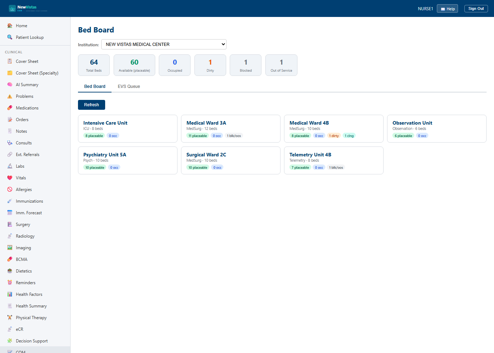

Bed Board & EVS turnover
The Bed Board (/beds) shows every bed on the floor at a glance —
who's placeable, who's occupied, and which beds are waiting to be cleaned. As a
nurse you'll use it to see your unit's state and to turn beds over after a
discharge. Reading the board is open to any clinical user; the EVS and bed-status
actions need the DG BED CONTROL key — your ORELSE key
also covers the clean/dirty flips, so you can turn a bed without extra access.
Open the board and find your unit
- In the sidebar, under Inpatient, click Bed Board (or go to
/beds). - Check the Institution picker at the top (defaults to your hospital), then click your unit's card to open its board.

Read the bed grid
Inside a unit, beds are grouped by room (a small unit with no rooms shows a flat list). Each bed is a colored card:
- Green — Available (placeable)
- Blue — Occupied (shows the patient)
- Amber — Reserved (held for an incoming patient)
- Orange — Dirty / Teal — Cleaning (EVS turnover)
- Gray — Blocked / Out of Service (with a reason)
Turn a bed over (EVS)
When a patient is discharged or transferred out, their bed becomes Dirty automatically — it never jumps straight back to Available. Turn it over:
- On the Dirty bed, click Start cleaning → it shows Cleaning.
- When it's ready, click Mark clean → it becomes Available for the next patient.
Block or take a bed down
- Block… holds a bed out for a reason (isolation buffer, staffing). A reason is required. Unblock frees it.
- Out of service… flags a bed for maintenance; Return to service sends it to Dirty so it's cleaned before reuse.
- You can't block or down an occupied or reserved bed — the patient or reservation has to clear first.